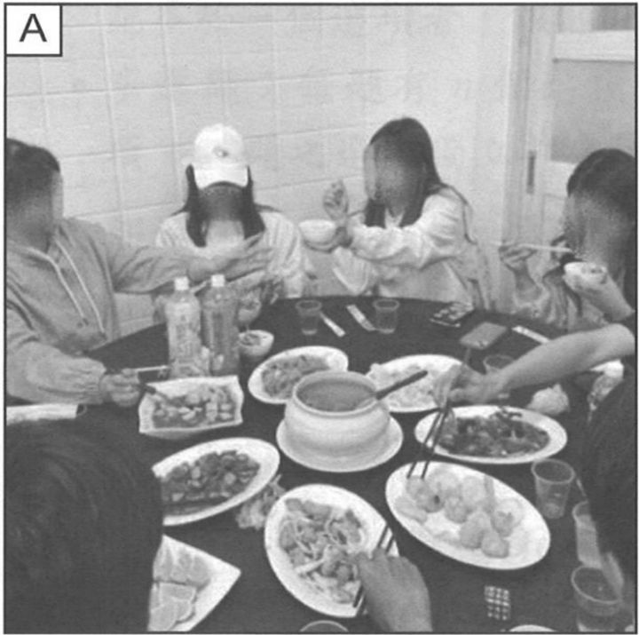
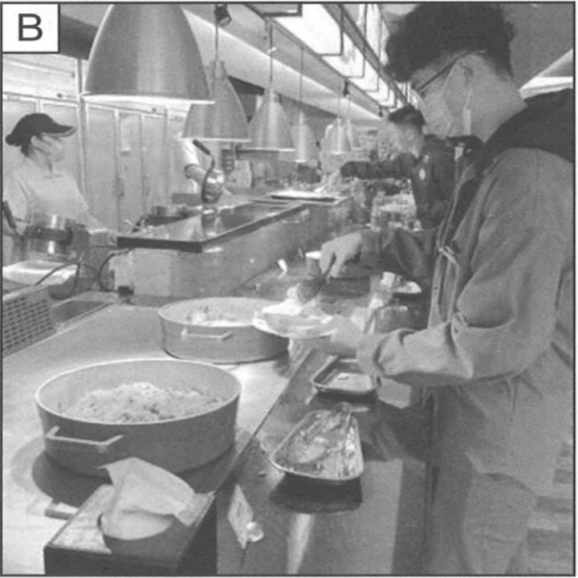

← 回課程首頁
GSAT ENGLISH · DAY 15 · 約 25–30 分鐘
骨架先寫對，
上一課你默寫 10 格全對，也寫到 80 字。今天把「會背」變成「寫出來也對」。
今天的路線 （每一段都會自動儲存）
01 / 5 分鐘 / 回饋＋打字
一、上一課的回饋：改自己的兩句
做得好的
四個句構默寫 10 格全對，而且沒有偷看。段落寫到 80 字。taking care of elderly people 、Although they are all helping others 都是你自己想的，而且正確。
最重要的一件事
你默寫全對、選擇題也全對，但自己寫的時候 ，開頭句不見了，第 ③ 句也寫錯了，而且和上一課錯在同一個地方。四句骨架先原封不動寫出來，再加自己的句子。 骨架是保底的分數。
改寫 1｜這一句有兩個錯
In contrast, the right-hand picture show some students are helping in a library.
把改對的整句打出來。提示：想一下第 ③ 句骨架。
對一下
改寫 2｜這一句也有兩個錯
a student is mapping the floor, another is reading a story to children.
提示：① 拖地是 mop ，map 是地圖。② 兩個完整的句子不能只用逗號接，中間要有連接詞。
對一下
其他三個地方（看過就好）
According to the two pictures, I can clearly see that → The two pictures show different scenes of students doing volunteer work.
開頭直接用第 ① 句骨架。I can clearly see that 沒有內容，只是佔字數。
their objects are different → the people they help are different
object 是「物品」。「服務的對象」說 the people they help 。
while others prefer volunteering → helping children
兩張圖都是志工，所以 volunteering 分不出差別。收尾句兩邊要寫出不一樣的地方 。
翻譯 （上一課）
… according to their English ability and do a variety of listening and speaking activities.
「進行 多樣的聽、說活動」的動詞你漏了，逗號後面只剩名詞。翻譯寫完，拿中文一個詞一個詞對。divide … into 、according to 、a variety of 都寫對了。
02 / 2 分鐘 / 用點的
二、圈題目
今天的題目
生字：banquet 宴席（一桌人合菜） buffet 自助餐（吃到飽，自己拿）
對答案
03 / 4 分鐘 / 用點的
三、觀察卡
每格三個選項，只有一個完全正確。最後三題是細節句。

圖 A（左）宴席 
圖 B（右）自助餐
圖會一直留在上面。點圖放大，再點一下畫面就關掉 。
04 / 10 分鐘 / 打字
四、寫第一段
約 60–80 字。順序固定：① 開頭 → ② 左圖＋細節 → ③ 右圖＋細節 → ④ 收尾 。四句骨架先照背的寫，想加自己的句子就加在細節的位置。
目前 0 字 ／ 目標 60–80 字
題目 圖片 我的卡 句構
……請以「聚會用餐」為主題，並依據下列兩張圖片的內容，寫一篇英文作文，文分兩段。
第一段描述圖 A（a 10-course banquet）和圖 B（an all-you-can-eat buffet）的兩種用餐方式各有什麼特色。 第二段則說明與朋友聚餐時，這兩種用餐方式當中，你比較喜歡哪一種，並解釋你的理由。
今天只寫第一段。
先靠記憶寫，真的忘了才看。
① The two pictures show different scenes of people eating together .
② In the picture on the left, 誰 is / are V-ing 在哪 .
③ In contrast, the right-hand picture shows 誰 V-ing 在哪 .
④ These two pictures show that some people enjoy V-ing , while others prefer V-ing .
寫完了，讓系統幫你對
今天系統多看一件事：骨架有沒有寫對。有問題它只會告訴你在第幾句 ，錯在哪要自己找。
寫完了，對一下
05 / 4 分鐘 / 打中文
五、我的經驗：補上細節
上一課你寫的太短，還不能變成一段英文。每一格照問題用中文 補 2–3 句，越具體越好（時間、跟誰、做了什麼、結果怎樣）。
下一課開始寫第二段，就會用到這些。老師會幫你變成英文。
06 / 5 分鐘 / 打字
六、翻譯一句
114 學測中譯英第 1 題。先不看答案寫一次。 寫完拿中文一個詞一個詞對，確定沒有漏，再按鈕。
人類的想像和創意是科技進步最大的驅動力。
提示：想像 imagination · 創意 creativity · 驅動力 driving force
寫好了，看解析
交給老師
複製我的作答 匯出 TXT
作答只暫存在這個瀏覽器，完成後請複製貼到 LINE。
交出後再看：第一段參考寫法
這不是唯一答案。
看參考寫法 The two pictures show different scenes of people eating together. In the picture on the left, some people are sitting around a round table at a banquet. They are sharing many dishes and talking with each other. In contrast, the right-hand picture shows a man choosing food at a buffet. There are many kinds of food on the counter, and he is taking the food by himself. These two pictures show that some people enjoy sharing dishes at a table, while others prefer choosing their own food.